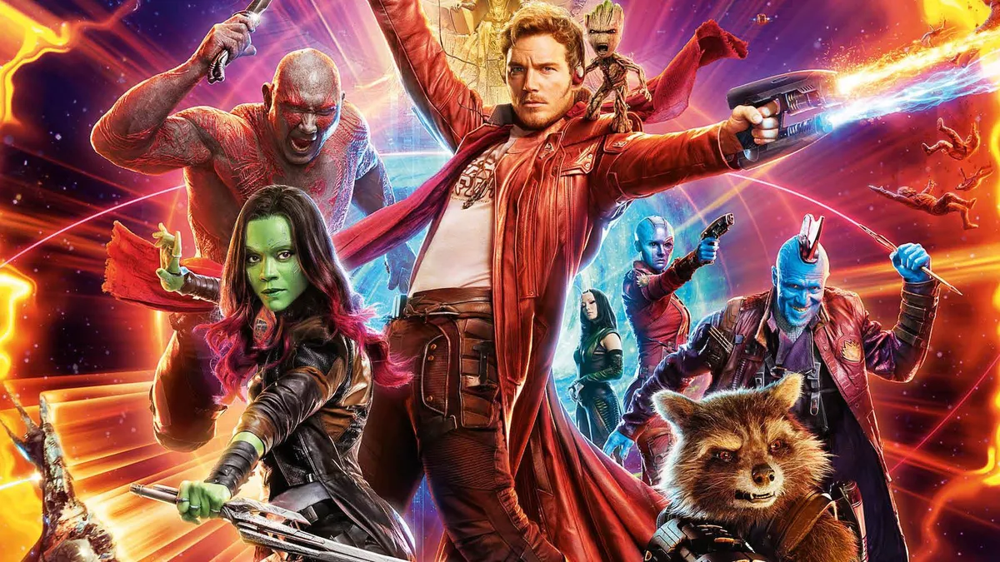

About Groot
Groot is not a tree. He is a Flora colossus. The Marvel Cinematic Universe introduced Groot as an intergalactic bounty hunter who works alongside his partner, a modified raccoon named Rocket. Following an unsuccessful bounty hunt, Groot and Rocket spiral into a series of adventures to protect the galaxy from evil-doers with new friends they've met along the way.
Groot and his friends
Groot's Characteristics
- Has physical features similar to that of a tree.
- Can stretch/ grow his body. In one particular instance he even grew and shaped his body into a sphere to enclose his friends and protect them from lethal impact.
- Can release heaps of glowing, spores that float around and emit light in dark places.
- Vocabulary is limited to “I,” “am” and “Groot,” but only in that order.
- Fearless, selfless, charismatic and a little bit odd (in a silly, but funny way).
Groot's Friends
Groot is great at introducing himself and because of this he meets some pretty awesome people and makes lots of friends. His tight-knit group of friends consider each other family and would put their lives in danger to protect one another. This group is known as the Guardians of the Galaxy. Click on the links below to read more about them: